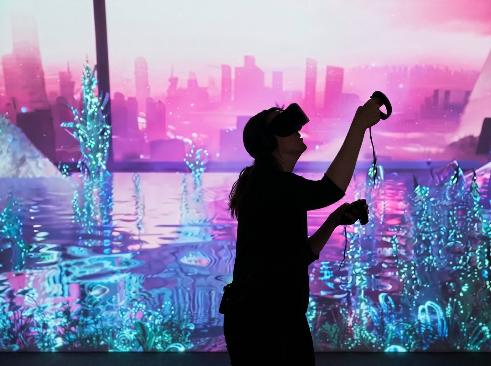
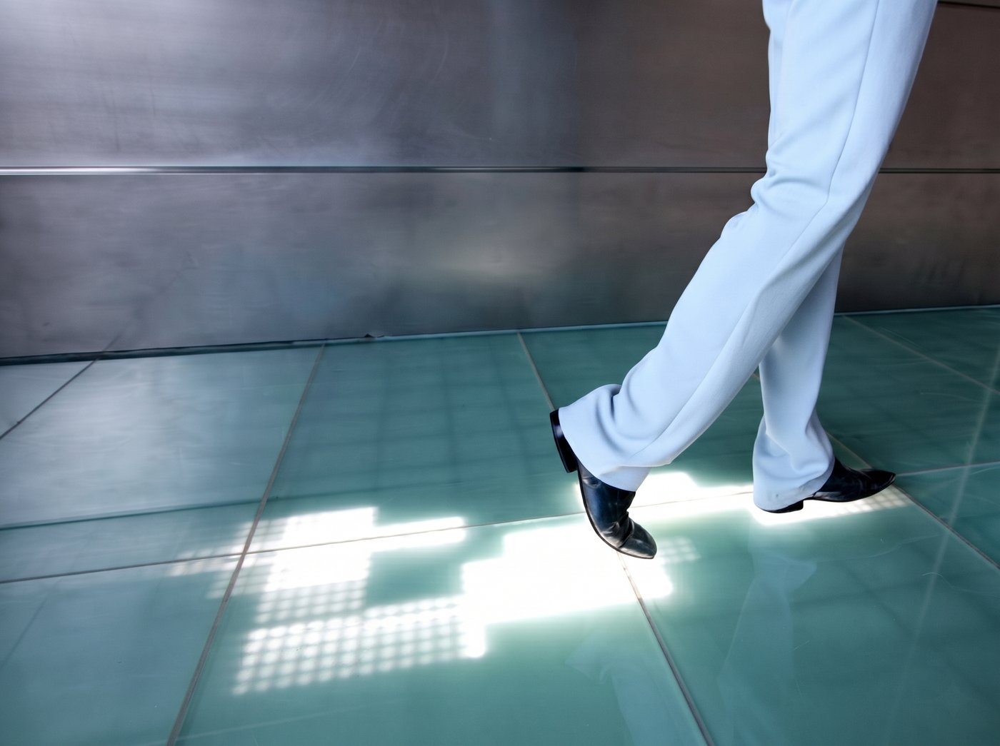
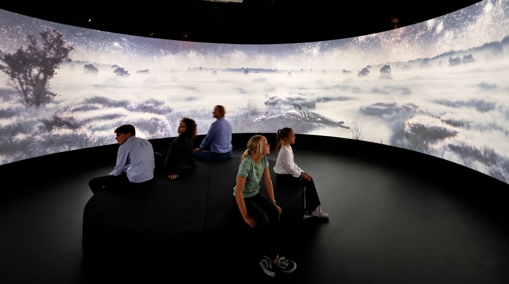
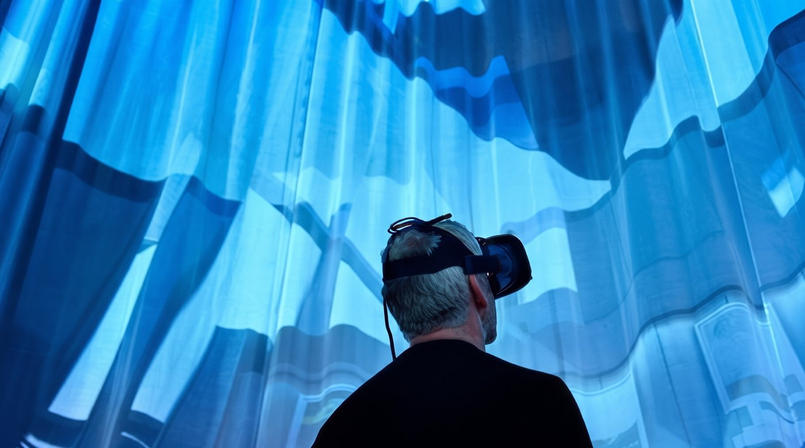
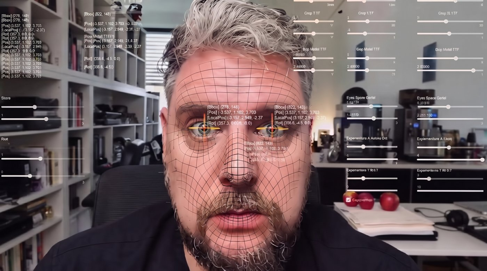
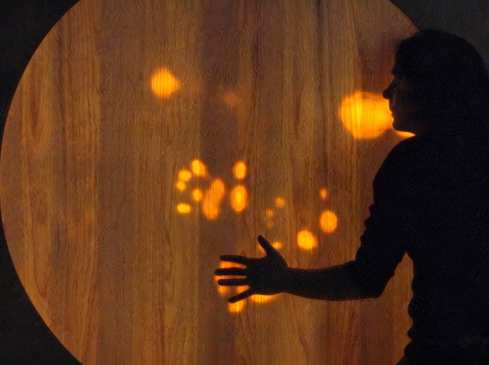
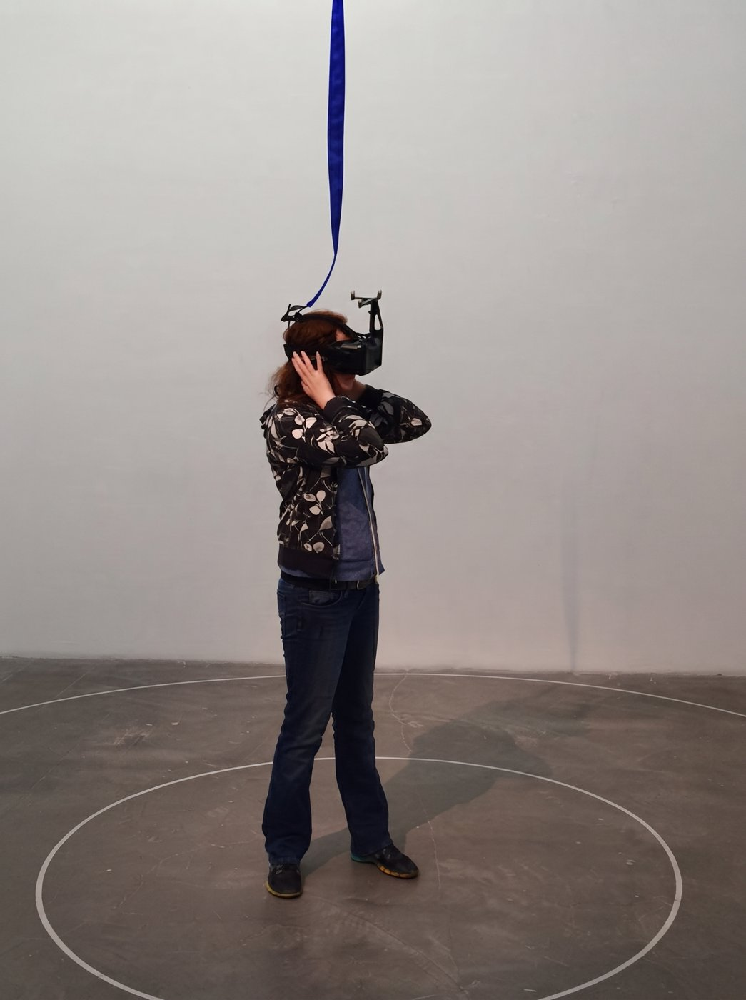
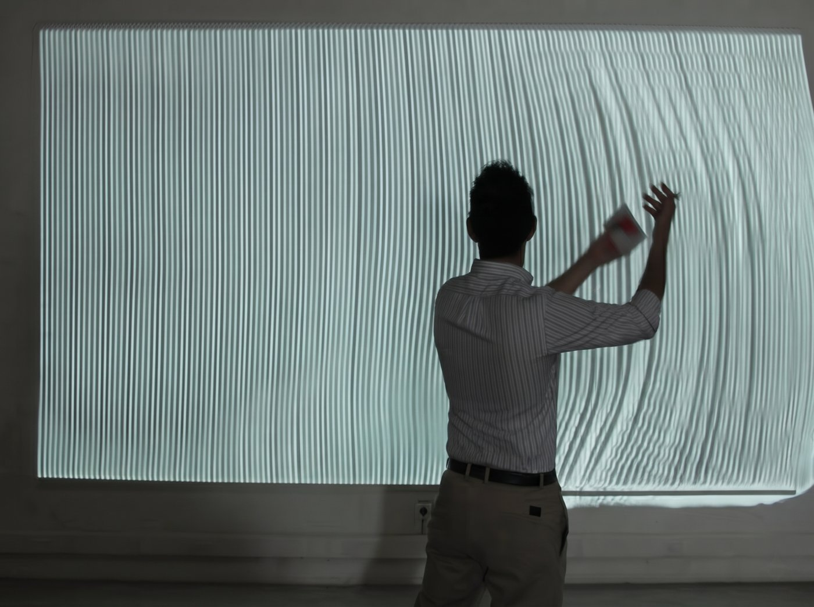

Software-based art는 프로그램, 알고리즘, 게임 엔진, 인공지능, VR·AR처럼 소프트웨어가 실행되면서 완성되는 작품입니다.

착용된 풍경한승우

발밑으로김태윤

그를 찾는 100가지 방법이다희

Cloud Walker박준서

Blue ZoneChris Fassbender

Tracked SelfMarcus Hale

경로를 찾아가세요정하람

러브 앤 데스한유진

태양오서진

해안선윤성재

시티 가든-뉴욕서지안

접촉, 순간장은호

Rendered DesertAnna Keller

어제와 같은문서윤

붉은 신호의 숲강도현

엔딩 크레딧송재원